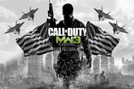

Gamen
Je heel veel FPS games zoals Call of Duty. FPS games zijn vooral gebasseerd op oorlogen zoals WOII. Bij FPS games zie je alleen de geweer, je eigen karakter zie je niet. Call of Duty is hier een heel goed voorbeeld van. Call of Duty heeft nu heel veel verschillende games zoals Advanced Warfare en de Black Ops series. Je hebt ook veel Third Person Shooter games zoals Battlefield Heroes(De game bestaat eigenlijk niet meer). Bij Third Person Shooter games zie je wel je karakter alleen kan je niet ingezoomd richten dus is dat ook weer een ding waaraan je kan zien dat het een Third Person Shooter is.